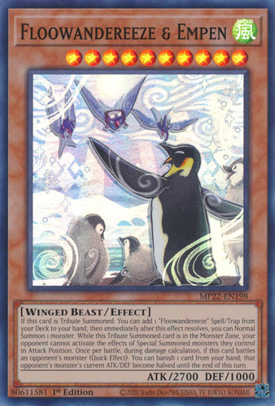
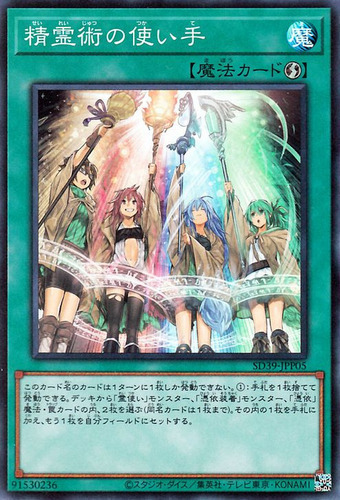
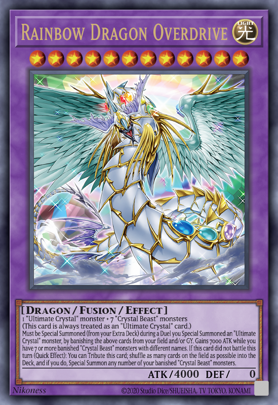
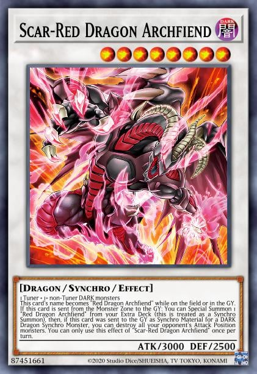

Deck Floowandereeze

El deck Floowandereeze en Yu-Gi-Oh! se basa en invocaciones normales consecutivas, controlando el campo y evitando el uso del cementerio. Sus monstruos pequeños permiten traer otros del deck, y escalan hacia criaturas más poderosas. Es consistente, pero vulnerable a interrupciones en sus invocaciones
Deck Spirit Charmer

El deck Spirit Charmer en Yu-Gi-Oh! gira en torno a las encantadoras ("Charmers") y sus familiares, que controlan monstruos de atributos Tierra, Fuego, Agua y Viento. Su estrategia principal es robar monstruos del oponente o beneficiarse de los atributos en el campo, mientras invocan monstruos familiares para apoyo. Es un mazo versátil que se adapta según el atributo dominante del oponente, aunque puede ser lento si no logra establecer su control rápidamente.
Deck Crystal Beast

El deck Crystal Beast en Yu-Gi-Oh! se enfoca en monstruos que, al ser destruidos, se colocan en la zona de Magia y Trampa como Cartas de Magia continua. Esto permite al jugador acumular recursos y activar cartas poderosas, como Rainbow Bridge o Crystal Abundance. Su estrategia culmina en la invocación de su jefe final, Rainbow Dragon, que puede acabar el duelo con su gran poder. Es un mazo que requiere gestión cuidadosa de recursos y posicionamiento, pero puede generar jugadas explosivas si se establece bien.
Deck Resonator

El deck Resonator en Yu-Gi-Oh! se basa en la rápida invocación de monstruos Sincro de alto nivel, como Dragón Rojo Archidemonio y sus variantes. Los monstruos Resonator, que son Tuners de bajo nivel, se combinan fácilmente con otros monstruos para realizar invocaciones Sincro, permitiendo control del campo y acceso a monstruos poderosos con efectos devastadores. El mazo también tiene varias cartas de soporte que aumentan la velocidad de las jugadas y protegen a los monstruos en el campo, lo que lo convierte en un mazo agresivo y capaz de dominar rápidamente el duelo.